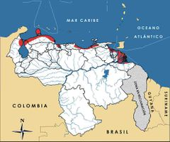

Cardisoma guanhumi
| Cangrejo de tierra | |
|---|---|
| Riesgo de extinción | |
 Vulnerable (UICN) | |
| Clasificación científica | |
| Reino: | Animalia |
| Filo: | Arthropoda |
| Clase: | Malacostraca |
| Orden: | Decapoda |
| Familia: | Gecarcinidae |
| Género: | Cardisoma |
| Especie: | Cardisoma guanhumi |
| Nombre binomial | |
|
Cardisoma guanhumi Latreille, 1825 | |
| Distribución | |
|
 Mapa de distribución de Cardisoma guanhumi | |
Contenido
Información de Evaluación
- Categoría y Criterio Regional: Vulnerable A2c
- Fecha de Evaluación Regional: 2015
- Evaluadores: Jesús Morales-Campos y Ariany García-Rawlins
- Categoría y Criterio Global: No Evaluado
Justificación
Evaluaciones Previas
1999: Datos Insuficientes (DD)
2008: Vulnerable (VU)
Información General
Nombres comunes
Cangrejo de tierra, cangrejo guatero, cangrejo azul, cangrejo juey (Puerto Rico), guaiamum (Brasil), blue land crab.
Notas taxonómicas
Sinónimos
Descripción
Es un cangrejo terrestre de caparazón cordiforme, ovalado transversalmente, convexo en ambas direcciones (redondeado) y con los bordes laterales muy arqueados. La superficie dorsal de su frente es excavada, con pequeños tubérculos, y la del caparazón está cubierta con diminutas papilas planas, apenas visibles. El cuerpo y las patas de los adultos presentan una típica coloración gris azulada, mientras que los juveniles pueden ser marrones, morados o anaranjados (Rodríguez, G. 1980). Es la especie de cangrejo terrestre más grande que existe en la región costera del oeste Atlántico. En Venezuela, su caparazón alcanza un máximo de largo de 10,45 cm (Carmona-Suárez 2011). Los machos adultos se caracterizan por poseer una de sus quelas de gran tamaño.
Distribución
Cardisoma guanhumi exhibe una amplia distribución que se extiende desde la península de Florida en los Estados Unidos, el golfo de México y todas las Antillas, hasta São Paulo en Brasil, siendo reportado también en Bermuda (Rodríguez, G. 1980). En Venezuela está bastante distribuida a lo largo de la costa de tierra firme y de la región insular, donde habita playas fangosas con manglares, cují, verdolaga, cocotales y gramíneas (Carmona-Suárez 2011, Taissoun 1974a). Vive en madrigueras desde la costa hasta aproximadamente 8 km tierra adentro; su localidad se encuentra limitada por el nivel freático (máximo 1,5 m de profundidad) (Taissoun 1974a).
- Sistema: Marino y Terrestre
- Bioregión:
- Intervalo altitudinal (m): Temporalmente sin Información
- Endémica: No
Situación
Su biología y ecología han sido estudiadas en la zona de Tucacas, estado Falcón (Taissoun 1974a), y en la laguna de Tacarigua y Carenero, estado Miranda (Moreno, M. T. 1980, Carmona-Suárez, datos sin publicar). Su distribución, abundancia y tamaño corporal fueron examinados a lo largo del 75% de las costas venezolanas. La densidad actual de sus madrigueras oscila entre 0,24 y 5,48 por metro cuadrado y el tamaño de los animales fluctúa entre un mínimo de 3,49 cm y un máximo de 10,45 cm, con una media de 4,81 cm (Carmona-Suárez 2011). Hasta hace algunos años fue objeto de una fuerte presión humana, siendo explotado sin control alguno principalmente en el eje Chichiriviche-Boca de Aroa y en la zona de Barlovento, en Miranda (Taissoun 1974b). Los cangrejos capturados se mantenían en corrales y se alimentaban hasta ser exportados vivos a Puerto Rico (Taissoun 1974b). Sin embargo, a raíz de la crisis económica mundial de 2009, sus capturas se redujeron considerablemente, al punto de que los colectores se dedicaron a otras faenas (Carmona-Suárez 2011), con recolectores del eje Tucacas-Boca de Aroa y de Barlovento. Aún se les explota sin control en el Delta del Orinoco, donde son capturados por los warao y vendidos a los trinitarios que los transportan vivos a esa isla (Novoa 2002). En Colombia se clasifica como Vulnerable, reportándose situaciones similares en otros países donde se distribuyen (Bermúdez, A. et al. 2002a). No se le ha evaluado a nivel global (IUCN 2014).
- EOO (km2): Temporalmente sin información
- AOO (km2): Temporalmente sin información
- Tendencia Poblacional: Desconocida
Amenazas
Si bien una de las principales amenazas para la especie hasta hace algunos años era su explotación indiscriminada con fines comerciales (Taissoun 1974b), ésta ya ha dejado de ser tan grave en tiempos recientes. Hoy sus potenciales amenazas están dadas por la transformación y degradación de su hábitat. Durante la época reproductiva, las hembras realizan migraciones locales masivas hacia el mar, entre septiembre y enero, para desovar, muchas veces cruzando las principales carreteras del norte del país. Desafortunadamente estos desplazamientos coinciden con los períodos vacacionales y con el flujo de vehículos hacia los centros de recreación turística de la costa (Piñango 1992; C. A. Carmona-Suárez obs. pers.), lo que termina en arrollamientos masivos, sobre todo en los alrededores de poblados como Chichiriviche y Tucacas en el estado Falcón (Pereira 2008b). Pero el mayor peligro en estas y otras zonas similares tal vez estribe en el crecimiento acelerado urbanístico debido a la construcción de innumerables edificaciones a lo largo de la costa que no solo cubren el sustrato natural para la creación de sus madrigueras, sino que obstaculizan e impiden el paso de las hembras hacia el margen marino-costero en épocas de desove (C. A. Carmona-Suárez obs. pers.).
Conservación
En 1988, por resolución del Ministerio de Agricultura y Cría, se reglamenta la recolección (tamaños de los ejemplares), la prohibición de captura de las hembras, épocas de veda y comercialización de Cardisoma guanhumi (Venezuela 1998). Sin embargo, este decreto no es acatado. La especie tampoco es objeto de medida alguna de conservación en el país y no existen estadísticas oficiales sobre el volumen de su explotación. Aunque este cangrejo parece que es relativamente abundante, su estado en el largo plazo depende del control y manejo de la actividad pesquera. Varias de sus poblaciones se hallan dentro de los refugios de fauna silvestre y parques nacionales costeros venezolanos. Es necesario actualizar la comercialización de C. guanhumi y la magnitud de la misma. En el corto plazo deben crearse instrumentos legales que incluyan vigilancia y supervisión de la actividad comercial que se realiza con este crustáceo, así como el control de los arrollamientos, hoy por hoy la principal amenaza de sus poblaciones (Pereira 2008b).
Autorías
Autores originales
Carlos A. Carmona-Suárez
Colaboradores
Ilustrador
Ximenamaria Rausseo
Referencias
- Bermúdez, A., Hernando Campos, N. y Navas S., G. R. (2002a). Cardisoma guanhumi. En: Ardila, N., Navas, G. R. y Reyes, J. (Eds.). Libro rojo de los invertebrados marinos de Colombia. INVEMAR. Ministerio del Medio Ambiente. Serie Libros Rojos de Especies Amenazadas de Colombia. Bogotá, Colombia.
- Carmona-Suárez, C. A. (2011). Present status of Cardisoma guanhumi (Latreille, 1828) (Crustacea: Brachyura: Gecarcinidae) populations in Venezuela. Interciencia 36(12): 908-913.
- Carmona-Suárez, C. A. (2015). Cangrejo de tierra, Cardisoma guanhumi. En: J.P. Rodríguez, A. García-Rawlins y F. Rojas-Suárez (eds.) Libro Rojo de la Fauna Venezolana. Cuarta edición. Provita y Fundación Empresas Polar, Caracas, Venezuela. Recuperado de: animalesamenazados.provita.org.ve/content/cangrejo-de-tierra Mié, 09/05/2018 - 14:40
- IUCN (2014). The IUCN Red List of Threatened Species. Version 2014.3. Accesible en www.iucnredlist.org.
- Moreno, M. T. (1980). Crecimiento y Reproducción de Cardisoma guanhumi (Latreille) (Brachyura, Gecarcinidae) en Condiciones Marina y Estuarina. Tesis, Instituto Venezolano de Investigaciones Científicas. Caracas, Venezuela. 120 pp.
- Novoa, D. (2002). Los recursos pesqueros del eje fluvial Orinoco-Apura: presente y futuro. Editorial Exlibris. Ministerio de Agricultura y Tierras, INAPESCA. Caracas. 148 pp.
- Pereira, G. (2008b). Cangrejo de tierra, Cardisoma guanhumi. Páginas: 290-290. En: Rodríguez, J. P. y Rojas-Suárez, F. (Eds.). Libro Rojo de la Fauna Venezolana (Tercera Edición). Provita y Shell Venezuela, S. A. Caracas, Venezuela.
- Piñango, H. (1992). Status poblacional del cangrejo de tierra (Cardisoma guanhumi) en las principales áreas de explotación de Venezuela. XLII Convención Anual AsoVAC, Caracas. Acta Científica Venezolana 43(Supl. 1): 62.
- Rodríguez, G. (1980). Los crustáceos decápodos de Venezuela. Instituto Venezolano de Investigaciones Científicas. Caracas. 444 pp.
- Rodríguez, J. P. y Rojas-Suárez, F. (1999). Libro Rojo de la Fauna Venezolana, segunda edición. PROVITA, Fundación Polar. Caracas. 444 pp.
- Rodríguez, J. P. y Rojas-Suárez, F. (Eds.) (2008). Libro Rojo de la Fauna Venezolana, tercera edición. Provita y Shell Venezuela, S. A. Caracas, Venezuela. 364 pp.
- Taissoun, E. (1974a). El cangrejo de tierra Cardisoma guanhumi (Latreille) en Venezuela. Distribución, ecología, biología y evaluación poblacional. Boletín del Centro de Investigaciones Biológicas: 1-50.
- Taissoun, E. (1974b). El cangrejo de tierra Cardisoma guanhumi (Latreille) en Venezuela. Métodos de captura, comercialización e industrialización. Medidas y recomendaciones para la conservación de la especie. Boletín del Centro de Investigaciones Biológicas 10: 1-35.
- Venezuela. (1998). Resolución del Ministerio de Agricultura y Cría DM 559 mediante la cual se regula la captura del cangrejo azul terrestre (Cardisoma guanhumi). Gaceta Oficial de la República de Venezuela No. 36-563 - 20 de octubre de 1998. Caracas.